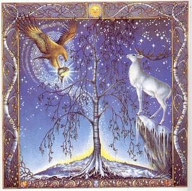

|

Mes: Diciembre – Enero
Signo: Capricornio
Hierba lunar: Saúco
Animal: Araña
Color: Blanco y rojo cereza
Diosas: Frau Holle, Lucina, Lakshmi, Demeter
Nombres: Luna de Beth (haya) para los celtas, Luna de la Nieve para los Apalaches, igual nombre para los nativos americanos del nordeste, Luna del Lobo para los wiccanos.
Como bien anuncia su nombre, la luna de diciembre o enero nos trae el frío pero también la alegría. Nos conecta a los sueños y nos muestra las primeras semillas que se están gestando en pleno invierno.
La luna de Capricornio nos aporta una energía especialmente creativa acompañada de cualidades tan importantes como la constancia y la dedicación. Es una luna productiva, ambiciosa y con grandes dotes para la organización y la planificación. Podemos aprender a dar forma a nuestros proyectos y llevarlos hasta su total cristalización. Aprenderemos a esforzarnos a y proteger todo aquello que nos importa, sobretodo nuestros seres queridos.
La alegría se impone en estos días de esfuerzo y de relax, de relaciones familiares y sociales. Cualquier motivo es válido para ensalzar la alegría, por pequeño que sea. Examinad vuestras vidas y encontrad los motivos por los cuales debéis sentiros felices y agradecidos. Valorad vuestro esfuerzo y reconoceos también tiempo para liberaros del cansancio y las tensiones. La alegría nos impulsa a hacer nuevos proyectos, a vivir nuevas aventuras, a seguir explorando el mundo y la vida. Relacionaos y compartid vuestra alegría, contagiadla a los que os rodean.
FESTIVIDADES RELACIONADAS
- En Japón, la estación del año nuevo suele celebrarse entre el uno y el siete,o quince de enero. Se sirven platos especiales y se ofrecen pasteles “hembra” a la luna y pasteles “macho” al sol. El ciruelo es uno de los árboles simbólicos de dicha estación anunciando el nuevo año ya que es el primero en florecer. En el folclore japonés le acompaña el ruiseñor, portador de alegría y precursor de la primavera.
- En la India, durante el quinto día de luna creciente se celebra Maugha. Es una fiesta dedicada a la primavera temprana, asociada con el principio de Makara, el signo de Capricornio, que marca el año nuevo. Se venera a Jagaddharti, diosa de la primavera; a Rati, esposa del dios del amor Kama; y a Lakshmi, diosa de la riqueza y la prosperidad.
- En la antigua Atenas se celebraba después del solsticio de invierno la desgustación del vino nuevo en honor a Dioniso. Durante la festividad de la vendimia o Haloa, se celebraba la fiesta de la trilla en honor a Demeter y Perséfone.
- Las Calendas de enero marcaban el año nuevo romano y los cónsules tomaban cargo de sus funciones. Durante la primera luna nueva tras el solsticio de invierno se entregaban unas ofrendas, strenae, para atraer la prosperidad. Reciben dicho nombre por la diosa Strenia, por la que se hacía una procesión con ramas de los bosques por toda la Via Sacra para celebrar el nuevo año.
|
 RSS
RSS